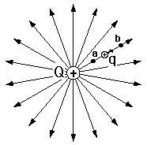
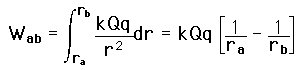
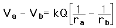
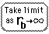

Point Charge Potential
The potential (voltage) of a point charge can be evaluated by calculating the work necessary to bring a test charge q in from an infinite distance to some distance r. The zero of potential is chosen at infinity.
|

|
Considering a radial path from a to b, the work done by the Coulomb force is obtained from a line integral which in this case becomes just a polynomial integral since we are moving along a straight radial line:

The change in potential is the work done per unit charge against the Coulomb force, so

|
For a positive charge q, the Coulomb force does positive work in moving it from a to b, so that represents a drop in potential energy.
|
Index
Voltage concepts |